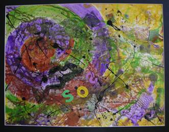
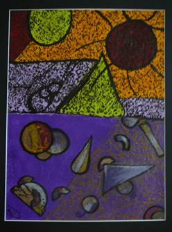
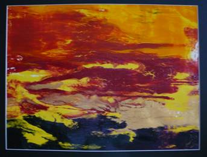
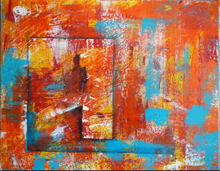
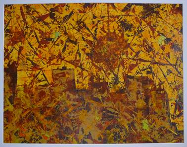
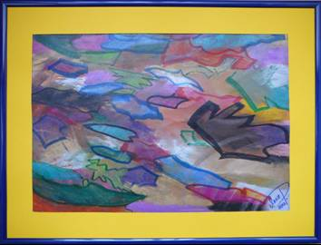

Verschiedene Techniken und experimentelle Ansätze in der Malerei - von traditionellen bis zu völlig unkonventionellen Methoden.
unterschiedliche Techniken

SOS
Collage-Technik, 2011
Acryl + div. Materialien
Malkarton 50x65, mit schwarzem Passepartout 60x80

Tag & Nacht
Sgraffito-Technik, 2012
Acryl und Kreide
Malkarton 50x65, mit schwarzem Passepartout 60x80

Energiequelle
Chaos-Technik, 2011
Acryl
Malkarton 50x65, mit schwarzem Passepartout 60x80
weitere Techniken

Homeoffice
Spachtel-Technik, 2012
Acryl auf Leinwand - 40x50

La Mancha
Spachtel-Technik, 2012
Acryl auf Malkarton - 50x64, mit Passepartout 60x80

Ölfelder
Kreiden